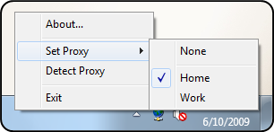

Proxy Monitor is a small application that monitors the network and auto-detects the internet proxy server to use.
See the Proxy Monitor homepage for the latest information.
Before this application can be used, the .NET Framework Version 2.0 must be installed. It is included in recent versions of Windows and available for free through Windows Update or at Microsoft's download page for the .NET Framework.
The application can be installed by just copying it to a destination directory of your choice. Uninstalling is just a matter of deleting the files again – there are no registry settings or other external items that are modified by the application.
The application can be started as a regular application, which will make it run as an icon in the system notification area. When started, it will auto-detect the proxy server to use. It will also automatically re-detect the proxy server when the computer’s network address has changed.
You can right-click the icon to manually set the proxy server or to trigger an auto-detection.

The application can also be run from the command-line with the /detect flag to auto-detect the proxy and exit immediately (e.g. when the computer starts up).
The application must be configured to include the definitions of the known proxy servers. This involves changing the ProxyMonitor.exe.config XML file in a text editor. The structure of the file and a sample configuration file are explained below.
At the root, the <proxyConfiguration> element defines the general
Proxy Monitor configuration settings.
Beneath it, the <proxyServers> element defines all known proxy
servers in separate <proxyServer> elements. This group defines
your general Local Area Network (LAN) settings that apply to your normal network
settings.
If you have additional connections such as dial-up or Virtual Private Network (VPN)
connections for which you want to specify different proxy servers, you can optionally
define a <connections> element, which contains a list of <connection>
elements that contains the same <proxyServers> structure as above.
The general Proxy Monitor configuration element <proxyConfiguration>
has the following attributes:
pingTimeout: the maximum time (in milliseconds) a proxy detection should
take; if none of the configured proxy servers has responded within this time, no
proxy server is selected. The default is 3000 milliseconds.disableNotifications: allows you to disable all proxy change notifications
(balloon tips) by setting the value to true. The default is false.
Each proxy server (either within or outside a <connection> element,
but always in a <proxyServers> element) must be represented as
a <proxyServer> element with the following attributes:
name: the friendly name of the proxy server. This will show up in the
context menu of the application icon in the notification area.host: the IP-address or host name of the proxy server.port: the TCP port to use on the proxy server. The default is port
80.bypassForLocalAddresses: set to true to bypass the proxy
server for local addresses, or false to always use the proxy server.
The default is true.bypassList: set to true to bypass the proxy server for local addresses,
or false to always use the proxy server (defaults to true).autoConfigUrl: set this to the url of an automatic proxy configuration
script, if available.command: the command (DOS command, batch file, ...) to execute if this
proxy is used.skipAutoDetect: skips auto-detection of this proxy server, so that
it can only be set manually through the context menu.
Only the name and either the host or autoConfigUrl
attributes are mandatory.
Each connection must be represented as a <connection> element
with the following attributes:
name: the name of the connection as defined in the Internet Options
dialog of your system (this must be exactly the same name).detectionDelay: the time in milliseconds to wait before starting detection
of the proxy servers in this connection. This can be useful if you have a connection
that takes a while to get set up before the proxy servers become "visible" (e.g.
VPN networks with security checks that take some time to complete).skipAutoDetect: skips auto-detection of all proxy servers in this connection,
so that they can only be set manually through the context menu.Important to note is that the connections are checked in sequence, so if you have a connection with a detection delay then the next connection won't be checked until after the delay and the detection have completed.
A sample configuration file looks as below.
It defines two different proxy servers for the LAN: a Home and a Work proxy server. The Home proxy is on a machine called "homeproxy" at port 8080. The Work proxy has an automatic configuration script located at "http://workproxy/autoconfig.pac" and if this one is detected, a "ConnectToShares" batch file is executed.
A separate connection is also defined for a Virtual Private Network (VPN) connection. It has a proxy server specific to the VPN connection, and an alternative proxy server that is not automatically detected but can be manually selected if needed for some reason. The automatic detection is delayed for 5 seconds to allow a security check to complete.
<?xml version="1.0" encoding="utf-8" ?>
<configuration>
<configSections>
<section name="proxyConfiguration"
type="ProxyMonitor.Configuration.ProxyConfiguration, ProxyMonitor" />
</configSections>
<proxyConfiguration pingTimeout="3000" disableNotifications="false">
<proxyServers>
<proxyServer name="Home"
host="homeproxy"
port="8080"
bypassForLocalAddresses="true"
bypassList="server1;server2" />
<proxyServer name="Work"
autoConfigUrl="http://workproxy/autoconfig.pac"
command="ConnectToShares.bat" />
</proxyServers>
<connections>
<connection name="VPN" detectionDelay="5000">
<proxyServers>
<proxyServer name="VPN Work"
autoConfigUrl="http://workproxy/vpn_proxy.pac" />
<proxyServer name="VPN Work (Alternate)"
autoConfigUrl="http://workproxy/vpn_proxy_alt.pac"
skipAutoDetect="true" />
</proxyServers>
</connection>
</connections>
</proxyConfiguration>
</configuration>
When the application is started or when the network address has changed, each configured
proxy server is checked to see if it is available by attempting to download the
autoConfigUrl or by sending a ping command to the host
machine. When the download succeeded or a ping reply is received, the proxy server
will be used and optionally the command is executed.
If you have also defined connections, the same process is followed
but any detected proxy server will only be set for the specified connection.
skipAutoDetect attribute to support proxies that are only
set manually.bypassList attribute to support the proxy bypass list.disableNotifications attribute to allow disabling notifications
(balloon tips).host, the autoConfigUrl attribute
of the proxyServer element is now used to determine if the proxy server
is reachable by attempting a download of the configuration script.host attribute of the proxyServer element
is now optional.Microsoft Public License (Ms-PL) This license governs use of the accompanying software. If you use the software, you accept this license. If you do not accept the license, do not use the software. 1. Definitions The terms "reproduce," "reproduction," "derivative works," and "distribution" have the same meaning here as under U.S. copyright law. A "contribution" is the original software, or any additions or changes to the software. A "contributor" is any person that distributes its contribution under this license. "Licensed patents" are a contributor's patent claims that read directly on its contribution. 2. Grant of Rights (A) Copyright Grant- Subject to the terms of this license, including the license conditions and limitations in section 3, each contributor grants you a non-exclusive, worldwide, royalty-free copyright license to reproduce its contribution, prepare derivative works of its contribution, and distribute its contribution or any derivative works that you create. (B) Patent Grant- Subject to the terms of this license, including the license conditions and limitations in section 3, each contributor grants you a non-exclusive, worldwide, royalty-free license under its licensed patents to make, have made, use, sell, offer for sale, import, and/or otherwise dispose of its contribution in the software or derivative works of the contribution in the software. 3. Conditions and Limitations (A) No Trademark License- This license does not grant you rights to use any contributors' name, logo, or trademarks. (B) If you bring a patent claim against any contributor over patents that you claim are infringed by the software, your patent license from such contributor to the software ends automatically. (C) If you distribute any portion of the software, you must retain all copyright, patent, trademark, and attribution notices that are present in the software. (D) If you distribute any portion of the software in source code form, you may do so only under this license by including a complete copy of this license with your distribution. If you distribute any portion of the software in compiled or object code form, you may only do so under a license that complies with this license. (E) The software is licensed "as-is." You bear the risk of using it. The contributors give no express warranties, guarantees or conditions. You may have additional consumer rights under your local laws which this license cannot change. To the extent permitted under your local laws, the contributors exclude the implied warranties of merchantability, fitness for a particular purpose and non-infringement.